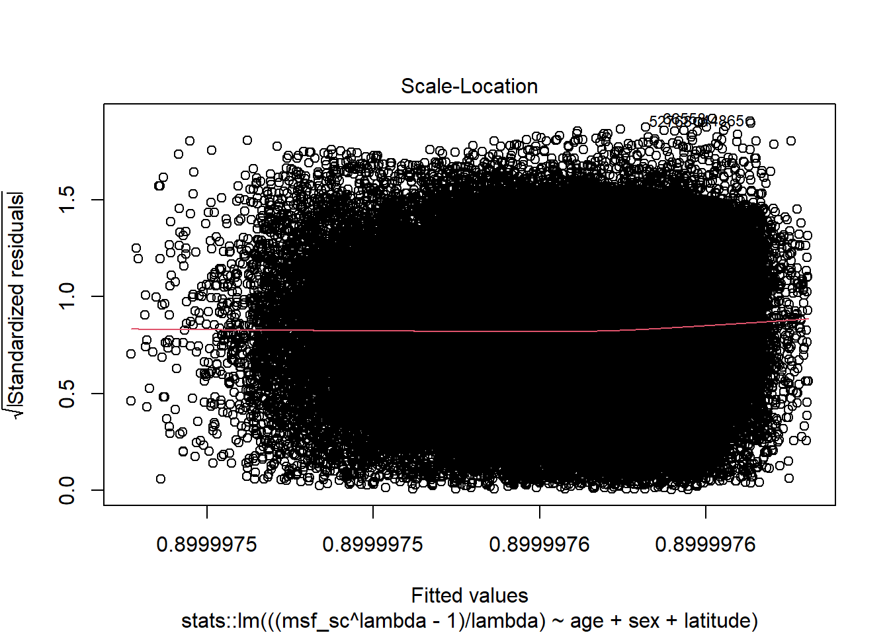

is_outlier <- function(x, method = "iqr", iqr_mult = 1.5, sd_mult = 3) {
checkmate::assert_numeric(x)
checkmate::assert_choice(method, c("iqr", "sd"))
checkmate::assert_number(iqr_mult)
checkmate::assert_number(sd_mult)
if (method == "iqr") {
iqr <- stats::IQR(x, na.rm = TRUE)
min <- stats::quantile(x, 0.25, na.rm = TRUE) - (iqr_mult * iqr)
max <- stats::quantile(x, 0.75, na.rm = TRUE) + (iqr_mult * iqr)
} else if (method == "sd") {
min <- mean(x, na.rm = TRUE) - (sd_mult * stats::sd(x, na.rm = TRUE))
max <- mean(x, na.rm = TRUE) + (sd_mult * stats::sd(x, na.rm = TRUE))
}
dplyr::if_else(x >= min & x <= max, FALSE, TRUE, missing = FALSE)
}Appendix E — Chapter 6 supplemental material
You are reading the work-in-progress of this thesis.
This chapter should be readable but is currently undergoing final polishing.
E.1 Hypothesis
- Statement
- Populations residing near the equator (latitude 0°) exhibit, on average, a shorter/morning circadian phenotype when compared to populations residing near the poles of the planet (Horzum et al., 2015; Hut et al., 2013; Leocadio-Miguel et al., 2014, 2017; Pittendrigh et al., 1991; Randler & Rahafar, 2017).
The study hypothesis was tested using nested models of multiple linear regressions. The main idea of nested models is to verify the effect of the inclusion of one or more predictors in the model variance explanation (i.e., the \(\text{R}^{2}\)) (Allen, 1997). This can be made by creating a restricted model and then comparing it with a full model. Hence, the hypothesis can be schematized as follows.
\[ \begin{cases} \text{H}_{0}: \text{R}^{2}_{\text{res}} >= \text{R}^{2}_{\text{full}} \\ \text{H}_{a}: \text{R}^{2}_{\text{res}} < \text{R}^{2}_{\text{full}} \end{cases} \]
The general equation for the F-test (Allen, 1997, p. 113) :
\[ \text{F} = \cfrac{\text{R}^{2}_{F} - \text{R}^{2}_{R} / (k_{F} - k_{R})}{(1 - \text{R}^{2}_{F}) / (\text{N} - k_{F} - 1)} \]
Where:
- \(\text{R}^{2}_{F}\) = Coefficient of determination for the full model
- \(\text{R}^{2}_{R}\) = Coefficient of determination for the restricted model
- \(k_{F}\) = Number of independent variables in the full model
- \(k_{R}\) = Number of independent variables in the restricted model
- \(\text{N}\) = Number of observations in the sample
\[ \text{F} = \cfrac{\text{Additional Var. Explained} / \text{Additional d.f. Expended}}{\text{Var. unexplained} / \text{d.f. Remaining}} \]
It’s important to note that, in addition to the F-test, it’s assumed that for \(\text{R}^{2}_{\text{res}}\) to differ significantly from \(\text{R}^{2}_{\text{full}}\), there must be a non-negligible effect size between them. This effect size can be calculated using Cohen’s \(f^{2}\) (Cohen, 1988, 1992):
\[ f^{2} = \cfrac{\text{R}^{2}_{F} - \text{R}^{2}_{R}}{1 - \text{R}^{2}_{F}} \]
\[ f^{2} = \cfrac{\text{Additional Var. Explained}}{\text{Var. unexplained}} \]
E.2 A brief look on general linear models
See DeGroot & Schervish (2012, pp. 699–707, pp. 736-754) and Hair (2019, pp. 259–370) to learn more.
“[…] A problem of this type is called a problem of multiple linear regression because we are considering the regression of \(Y\) on \(k\) variables \(X_{1}, \dots, X_{k}\), rather than on just a single variable \(X\), and we are assuming also that this regression is a linear function of the parameters \(\beta_{0}, \dots, \beta_{k}\). In a problem of multiple linear regressions, we obtain \(n\) vectors of observations (\(x_{i1}. \dots, x_{ik}, Y_{i}\)), for \(i = 1, \dots, n\). Here \(x_{ij}\) is the observed value of the variable \(X_{j}\) for the \(i\)th observation. The \(E{Y}\) is given by the relation
\[ E(Y_{i}) = \beta_{0} + \beta_{1} x_{i1} + \dots + \beta_{k} x_{ik} \]
(DeGroot & Schervish, 2012, p. 738)
E.2.1 Definitions
- Residuals/Fitted Values
- For \(i = 1, \dots, n\), the observed values of \(\hat{y} = \hat{\beta}_{0} + \hat{\beta}_{1} x_{i}\) are called fitted values. For \(i = 1, \dots, n\), the observed values of \(e_{i} = y_{i} - \hat{y}_{i}\) are called residuals (DeGroot & Schervish, 2012, p. 717).
“[…] regression problems in which the observations \(Y_{i}, \dots, Y_{n}\) […] we shall assume that each observation \(Y_{i}\) has a normal distribution, that the observations \(Y_{1}, \dots, Y_{n}\) are independent, and that the observations \(Y_{1}, \dots, Y_{n}\) have the same variance \(\sigma^{2}\). Instead of a single predictor being associated with each \(Y_{i}\), we assume that a \(p\)-dimensional vector \(z_{i} = (z_{i0}, \dots, z_{ip - 1})\) is associated with each \(Y_{i}\)” (DeGroot & Schervish, 2012, p. 736).
- General Linear Model
- The statistical model in which the observations \(Y_{1}, \dots, Y_{n}\) satisfy the following assumptions (DeGroot & Schervish, 2012, p. 738).
E.2.2 Assumptions
- Assumption 1
- Predictor is known. Either the vectors \(z_{1}, \dots , z_{n}\) are known ahead of time, or they are the observed values of random vectors \(Z_{1}, \dots , Z_{n}\) on whose values we condition before computing the joint distribution of (\(Y_{1}, \dots , Y_{n}\)) (DeGroot & Schervish, 2012, p. 736).
Age and sex are known predictors for the chronotype (Roenneberg et al., 2007).
- Assumption 2
- Normality. For \(i = 1, \dots, n\), the conditional distribution of \(Y_{i}\) given the vectors \(z_{1}, \dots , z_{n}\) is a normal distribution (DeGroot & Schervish, 2012, p. 737).
(Normality of the error term distribution (Hair, 2019, p. 287)).
As it will be seen in the next topics, without any transformation, the chronotype variable does not have a normal distribution. However, this can be satisfied with a Box-Cox transformation (see Box & Cox (1964)).
A residual diagnostics will test the assumption of normality of the error term distribution.
- Assumption 3
- Linear mean. There is a vector of parameters \(\beta = (\beta_{0}, \dots, \beta_{p - 1})\) such that the conditional mean of \(Y_{i}\) given the values \(z_{1}, \dots , z_{n}\) has the form
\[ z_{i0} \beta_{0} + z_{i1} \beta_{1} + \cdots + z_{ip - 1} \beta_{p - 1} \]
for \(i = 1, \dots, n\) (DeGroot & Schervish, 2012, p. 737).
(Linearity of the phenomenon measured (Hair, 2019, p. 287)).
The hypothesis assumes a linear relation.
- Assumption 4
- Common variance. There is as parameter \(\sigma^{2}\) such the conditional variance of \(Y_{i}\) given the values \(z_{1}, \dots , z_{n}\) is \(\sigma^{2}\) for \(i = 1, \dots\, n\).
(Constant variance of the error terms (Hair, 2019, p. 287))
The presence of unequal variances (heteroscedasticity) will be tested with a residual diagnostics.
- Assumption 5
- Independence. The random variables \(Y_{1}, \dots , Y_{n}\) are independent given the observed \(z_{1}, \dots , z_{n}\) (DeGroot & Schervish, 2012, p. 737).
(Independence of the error terms (Hair, 2019, p. 287)).
This will also be tested with a residual diagnostics.
E.3 Data preparation
Outlier treatment (for now): 1.5x Interquartile range (IQR) for age and chronotype (MSFsc).
source(here::here("R/utils.R"))
utc_minus_3_states <- c(
"Amapá", "Pará", "Maranhão", "Tocantins", "Piauí", "Ceará",
"Rio Grande do Norte", "Paraíba", "Pernambuco", "Alagoas", "Sergipe",
"Bahia", "Distrito Federal", "Goiás", "Minas Gerais", "Espírito Santo",
"Rio de Janeiro", "São Paulo", "Paraná", "Santa Catarina",
"Rio Grande do Sul"
)
data <-
targets::tar_read("geocoded_data", store = here::here("_targets")) |>
dplyr::filter(state %in% utc_minus_3_states) |>
dplyr::select(msf_sc, age, sex, state, latitude, longitude) |>
dplyr::mutate(msf_sc = transform_time(msf_sc)) |>
tidyr::drop_na(msf_sc, age, sex, latitude)E.4 Restricted model
E.4.1 Model building
box_cox <- MASS::boxcox(msf_sc ~ age + sex, data = data)
Source: Created by the author. See Box & Cox (1964) to learn more.
lambda <- box_cox$x[which.max(box_cox$y)]
lambda
#> [1] -1.1111res_model <- stats::lm(
((msf_sc^lambda - 1) / lambda) ~ age + sex, data = data
)broom::tidy(res_model)| term | estimate | std.error | statistic | p.value |
|---|---|---|---|---|
| (Intercept) | 0.9 | 0 | 513579298.250 | 0 |
| age | 0.0 | 0 | -65.128 | 0 |
| sexMale | 0.0 | 0 | 13.020 | 0 |
Source: Created by the author.
broom::glance(res_model) |> tidyr::pivot_longer(cols = dplyr::everything())| name | value |
|---|---|
| r.squared | 0.05373 |
| adj.r.squared | 0.05371 |
| sigma | 0.00000 |
| statistic | 2178.87560 |
| p.value | 0.00000 |
| df | 2.00000 |
| logLik | 1106194.89709 |
| AIC | -2212381.79419 |
| BIC | -2212344.80126 |
| deviance | 0.00000 |
| df.residual | 76741.00000 |
| nobs | 76744.00000 |
Source: Created by the author.
res_model |> summary()
#>
#> Call:
#> stats::lm(formula = ((msf_sc^lambda - 1)/lambda) ~ age + sex,
#> data = data)
#>
#> Residuals:
#> Min 1Q Median 3Q Max
#> -0.0000004859 -0.0000000911 -0.0000000031 0.0000000916 0.0000004204
#>
#> Coefficients:
#> Estimate Std. Error t value Pr(>|t|)
#> (Intercept) 0.8999976603602 0.0000000017524 513579298.2 <2e-16 ***
#> age -0.0000000033812 0.0000000000519 -65.1 <2e-16 ***
#> sexMale 0.0000000132309 0.0000000010162 13.0 <2e-16 ***
#> ---
#> Signif. codes: 0 '***' 0.001 '**' 0.01 '*' 0.05 '.' 0.1 ' ' 1
#>
#> Residual standard error: 0.000000133 on 76741 degrees of freedom
#> Multiple R-squared: 0.0537, Adjusted R-squared: 0.0537
#> F-statistic: 2.18e+03 on 2 and 76741 DF, p-value: <2e-16E.4.2 Residual diagnostics
E.4.2.1 Normality
source(here::here("R/stats_sum.R"))
source(here::here("R/utils.R"))
res_model |>
stats::residuals() |>
stats_sum(print = FALSE) |>
list_as_tibble()| name | value |
|---|---|
| n | 76744 |
| n_rm_na | 76744 |
| n_na | 0 |
| mean | 6.60699976667332e-23 |
| var | 0.0000000000000176852866826985 |
| sd | 0.000000132986039427823 |
| min | -0.000000485865195534305 |
| q_1 | -0.0000000911138016567908 |
| median | -0.00000000313530324787135 |
| q_3 | 0.000000091553820345483 |
| max | 0.000000420368932360539 |
| iqr | 0.000000182667622002274 |
| skewness | -0.0105262146639209 |
| kurtosis | 2.82813923301771 |
Source: Created by the author.
| test | p_value |
|---|---|
| Anderson-Darling | 0.00000 |
| Bonett-Seier | 0.00000 |
| Cramer-von Mises | 0.00000 |
| D’Agostino Omnibus Test | NA |
| D’Agostino Skewness Test | 0.23383 |
| D’Agostino Kurtosis Test | NA |
| Jarque–Bera | 0.00000 |
| Lilliefors (K-S) | 0.00000 |
| Pearson chi-square | 0.00000 |
| Shapiro-Francia | NA |
| Shapiro-Wilk | NA |
Source: Created by the author.
Correlation between observed residuals and expected residuals under normality.
res_model |> olsrr::ols_test_correlation()
#> [1] 0.99929source(here::here("R/test_normality.R"))
# res_model |> olsrr::ols_plot_resid_qq()
qq_plot <- res_model |>
stats::residuals() |>
plot_qq(print = FALSE)
hist_plot <- res_model |>
stats::residuals() |>
plot_hist(print = FALSE)
cowplot::plot_grid(hist_plot, qq_plot, ncol = 2, nrow = 1)Source: Created by the author.
E.4.2.2 Common variance
res_model |> olsrr::ols_plot_resid_fit()Source: Created by the author.
res_model |> plot(3)
Source: Created by the author.
res_model |> olsrr::ols_test_breusch_pagan()
#>
#> Breusch Pagan Test for Heteroskedasticity
#> -----------------------------------------
#> Ho: the variance is constant
#> Ha: the variance is not constant
#>
#> Data
#> --------------------------------------------------------
#> Response : ((msf_sc^lambda - 1)/lambda)
#> Variables: fitted values of ((msf_sc^lambda - 1)/lambda)
#>
#> Test Summary
#> -----------------------------
#> DF = 1
#> Chi2 = 70149.3586
#> Prob > Chi2 = 0.0000res_model |> olsrr::ols_test_score()
#>
#> Score Test for Heteroskedasticity
#> ---------------------------------
#> Ho: Variance is homogenous
#> Ha: Variance is not homogenous
#>
#> Variables: fitted values of ((msf_sc^lambda - 1)/lambda)
#>
#> Test Summary
#> ------------------------
#> DF = 1
#> Chi2 = 0.000
#> Prob > Chi2 = 1.000E.4.2.3 Independence
- Variance inflation factor (VIF)
- “Indicator of the effect that the other independent variables have on the standard error of a regression coefficient. The variance inflation factor is directly related to the tolerance value (\(\text{VIF}_{i} = 1/\text{TO}L\)). Large VIF values also indicate a high degree of collinearity or multicollinearity among the independent variables” (Hair, 2019, p. 265).
res_model |> olsrr::ols_coll_diag()
#> Tolerance and Variance Inflation Factor
#> ---------------------------------------
#> Variables Tolerance VIF
#> 1 age 0.9988 1.0012
#> 2 sexMale 0.9988 1.0012
#>
#>
#> Eigenvalue and Condition Index
#> ------------------------------
#> Eigenvalue Condition Index intercept age sexMale
#> 1 2.422418 1.0000 0.011753 0.011936 0.0669897
#> 2 0.538450 2.1211 0.015824 0.018848 0.9280439
#> 3 0.039132 7.8679 0.972423 0.969216 0.0049664E.4.2.4 Measures of influence
- Leverage points
- “Type of influential observation defined by one aspect of influence termed leverage. These observations are substantially different on one or more independent variables, so that they affect the estimation of one or more regression coefficients” (Hair, 2019, p. 262).
res_model |> olsrr::ols_plot_resid_lev()Source: Created by the author.
E.5 Full model
E.5.1 Model building
box_cox <- MASS::boxcox(
msf_sc ~ age + sex + latitude, data = data
)
Source: Created by the author. See Box & Cox (1964) to learn more.
box_cox$x[which.max(box_cox$y)] # lambda
#> [1] -1.1515lambda # The same lambda of the restricted model
#> [1] -1.1111full_model <- stats::lm(
((msf_sc^lambda - 1) / lambda) ~ age + sex + latitude,
data = data
)broom::tidy(full_model)| term | estimate | std.error | statistic | p.value |
|---|---|---|---|---|
| (Intercept) | 0.9 | 0 | 391908052.847 | 0 |
| age | 0.0 | 0 | -66.928 | 0 |
| sexMale | 0.0 | 0 | 13.558 | 0 |
| latitude | 0.0 | 0 | -23.852 | 0 |
Source: Created by the author.
broom::glance(full_model) |>
tidyr::pivot_longer(cols = dplyr::everything())| name | value |
|---|---|
| r.squared | 0.06070 |
| adj.r.squared | 0.06066 |
| sigma | 0.00000 |
| statistic | 1652.97928 |
| p.value | 0.00000 |
| df | 3.00000 |
| logLik | 1106478.33068 |
| AIC | -2212946.66136 |
| BIC | -2212900.42021 |
| deviance | 0.00000 |
| df.residual | 76740.00000 |
| nobs | 76744.00000 |
Source: Created by the author.
full_model |> summary()
#>
#> Call:
#> stats::lm(formula = ((msf_sc^lambda - 1)/lambda) ~ age + sex +
#> latitude, data = data)
#>
#> Residuals:
#> Min 1Q Median 3Q Max
#> -0.0000004874 -0.0000000911 -0.0000000034 0.0000000912 0.0000004328
#>
#> Coefficients:
#> Estimate Std. Error t value Pr(>|t|)
#> (Intercept) 0.8999976247783 0.0000000022965 391908052.9 <2e-16 ***
#> age -0.0000000034710 0.0000000000519 -66.9 <2e-16 ***
#> sexMale 0.0000000137296 0.0000000010127 13.6 <2e-16 ***
#> latitude -0.0000000018222 0.0000000000764 -23.9 <2e-16 ***
#> ---
#> Signif. codes: 0 '***' 0.001 '**' 0.01 '*' 0.05 '.' 0.1 ' ' 1
#>
#> Residual standard error: 0.000000132 on 76740 degrees of freedom
#> Multiple R-squared: 0.0607, Adjusted R-squared: 0.0607
#> F-statistic: 1.65e+03 on 3 and 76740 DF, p-value: <2e-16E.5.2 Residual diagnostics
E.5.2.1 Normality
source(here::here("R/stats_sum.R"))
source(here::here("R/utils.R"))
full_model |>
stats::residuals() |>
stats_sum(print = FALSE) |>
list_as_tibble()| name | value |
|---|---|
| n | 76744 |
| n_rm_na | 76744 |
| n_na | 0 |
| mean | 4.85272564733669e-24 |
| var | 0.0000000000000175551361304561 |
| sd | 0.00000013249579665203 |
| min | -0.000000487410752460545 |
| q_1 | -0.0000000910649425186321 |
| median | -0.000000003374344652286 |
| q_3 | 0.0000000911899588839585 |
| max | 0.000000432826012898983 |
| iqr | 0.000000182254901402591 |
| skewness | 0.000655994107765645 |
| kurtosis | 2.82688323293117 |
Source: Created by the author.
| test | p_value |
|---|---|
| Anderson-Darling | 0.00000 |
| Bonett-Seier | 0.00000 |
| Cramer-von Mises | 0.00000 |
| D’Agostino Omnibus Test | NA |
| D’Agostino Skewness Test | 0.94085 |
| D’Agostino Kurtosis Test | NA |
| Jarque–Bera | 0.00000 |
| Lilliefors (K-S) | 0.00000 |
| Pearson chi-square | 0.00000 |
| Shapiro-Francia | NA |
| Shapiro-Wilk | NA |
Source: Created by the author.
Correlation between observed residuals and expected residuals under normality.
full_model |> olsrr::ols_test_correlation()
#> [1] 0.99929source(here::here("R/test_normality.R"))
hist_plot <- full_model |>
stats::residuals() |>
plot_hist(print = FALSE)
qq_plot <- full_model |>
stats::residuals() |>
plot_qq(print = FALSE)
cowplot::plot_grid(hist_plot, qq_plot, ncol = 2, nrow = 1)Source: Created by the author.
E.5.2.2 Common variance
full_model |> olsrr::ols_plot_resid_fit()Source: Created by the author.
full_model |> plot(3)
Source: Created by the author.
full_model |> olsrr::ols_test_breusch_pagan()
#>
#> Breusch Pagan Test for Heteroskedasticity
#> -----------------------------------------
#> Ho: the variance is constant
#> Ha: the variance is not constant
#>
#> Data
#> --------------------------------------------------------
#> Response : ((msf_sc^lambda - 1)/lambda)
#> Variables: fitted values of ((msf_sc^lambda - 1)/lambda)
#>
#> Test Summary
#> -----------------------------
#> DF = 1
#> Chi2 = 70101.1634
#> Prob > Chi2 = 0.0000full_model |> olsrr::ols_test_score()
#>
#> Score Test for Heteroskedasticity
#> ---------------------------------
#> Ho: Variance is homogenous
#> Ha: Variance is not homogenous
#>
#> Variables: fitted values of ((msf_sc^lambda - 1)/lambda)
#>
#> Test Summary
#> ------------------------
#> DF = 1
#> Chi2 = 0.000
#> Prob > Chi2 = 1.000E.5.2.3 Independence
- Variance inflation factor (VIF)
- “Indicator of the effect that the other independent variables have on the standard error of a regression coefficient. The variance inflation factor is directly related to the tolerance value (\(\text{VIF}_{i} = 1/\text{TO}L\)). Large VIF values also indicate a high degree of collinearity or multicollinearity among the independent variables” (Hair, 2019, p. 265).
full_model |> olsrr::ols_coll_diag()
#> Tolerance and Variance Inflation Factor
#> ---------------------------------------
#> Variables Tolerance VIF
#> 1 age 0.99354 1.0065
#> 2 sexMale 0.99838 1.0016
#> 3 latitude 0.99441 1.0056
#>
#>
#> Eigenvalue and Condition Index
#> ------------------------------
#> Eigenvalue Condition Index intercept age sexMale latitude
#> 1 3.312504 1.0000 0.00377395 0.0064918 0.0304493 0.0068553
#> 2 0.584652 2.3803 0.00328127 0.0064143 0.9588857 0.0083393
#> 3 0.073700 6.7042 0.00040414 0.5063551 0.0023826 0.5659326
#> 4 0.029145 10.6609 0.99254063 0.4807389 0.0082824 0.4188728E.5.2.4 Measures of influence
- Leverage points
- “Type of influential observation defined by one aspect of influence termed leverage. These observations are substantially different on one or more independent variables, so that they affect the estimation of one or more regression coefficients” (Hair, 2019, p. 262).
full_model |> olsrr::ols_plot_resid_lev()Source: Created by the author.
E.6 Hypothesis test
\[ \begin{cases} \text{H}_{0}: \text{R}^{2}_{\text{res}} >= \text{R}^{2}_{\text{full}} \\ \text{H}_{a}: \text{R}^{2}_{\text{res}} < \text{R}^{2}_{\text{full}} \end{cases} \]
\[ \text{F} = \cfrac{\text{R}^{2}_{F} - \text{R}^{2}_{R} / (k_{F} - k_{R})}{(1 - \text{R}^{2}_{F}) / (\text{N} - k_{F} - 1)} \]
\[ \text{F} = \cfrac{\text{Additional Var. Explained} / \text{Additional d.f. Expended}}{\text{Var. unexplained} / \text{d.f. Remaining}} \]
source(here::here("R/utils-stats.R"))
dplyr::tibble(
name = c("r_squared_res", "r_squared_full", "diff"),
value = c(
r_squared(res_model), r_squared(full_model),
r_squared(full_model) - r_squared(res_model)
)
)| name | value |
|---|---|
| r_squared_res | 0.05373 |
| r_squared_full | 0.06070 |
| diff | 0.00696 |
Source: Created by the author.
print(stats::anova(res_model, full_model))
#> Analysis of Variance Table
#>
#> Model 1: ((msf_sc^lambda - 1)/lambda) ~ age + sex
#> Model 2: ((msf_sc^lambda - 1)/lambda) ~ age + sex + latitude
#> Res.Df RSS Df Sum of Sq F Pr(>F)
#> 1 76741 0.00000000136
#> 2 76740 0.00000000135 1 0.00000000000999 569 <2e-16 ***
#> ---
#> Signif. codes: 0 '***' 0.001 '**' 0.01 '*' 0.05 '.' 0.1 ' ' 1source(here::here("R/utils-stats.R"))
n <- nrow(data)
k_res <- length(stats::coefficients(res_model)) - 1
k_full <- length(stats::coefficients(full_model)) - 1
((r_squared(full_model) - r_squared(res_model)) / (k_full - k_res)) /
((1 - r_squared(full_model)) / (n - k_full - 1))
#> [1] 568.94\[ f^{2} = \cfrac{\text{R}^{2}_{F} - \text{R}^{2}_{R}}{1 - \text{R}^{2}_{F}} \]
\[ f^{2} = \cfrac{\text{Additional Var. Explained}}{\text{Var. unexplained}} \]